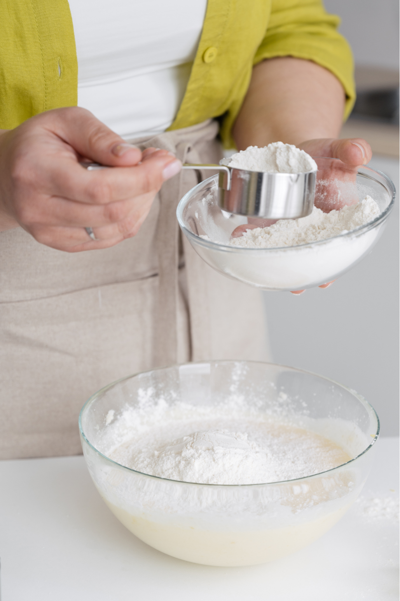
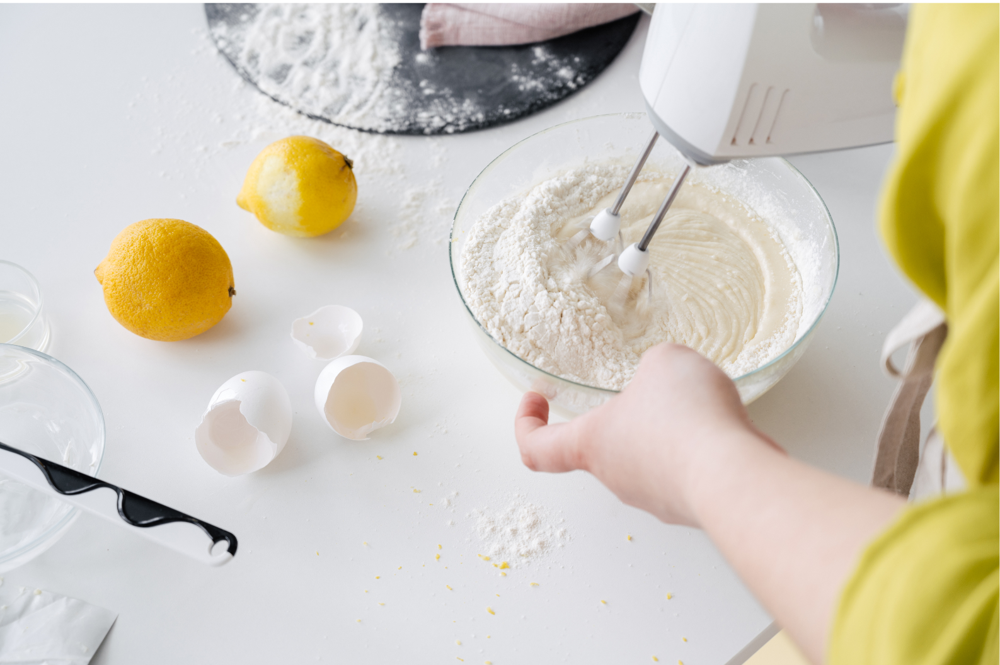
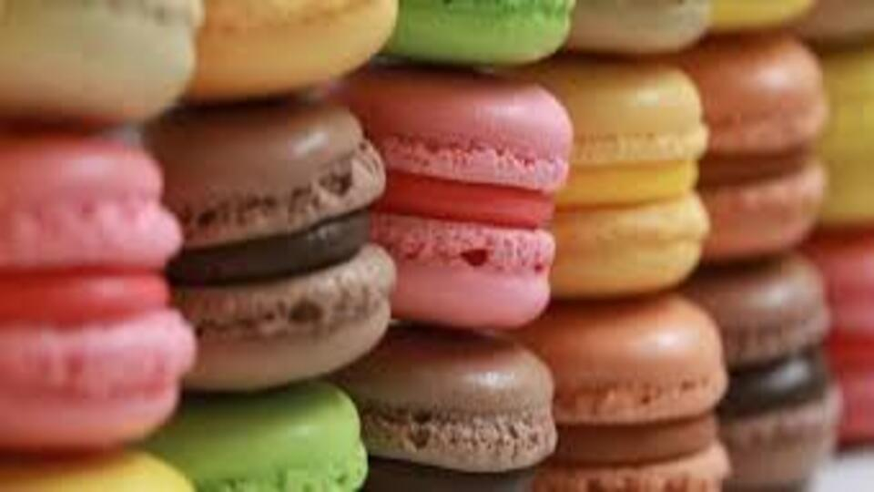
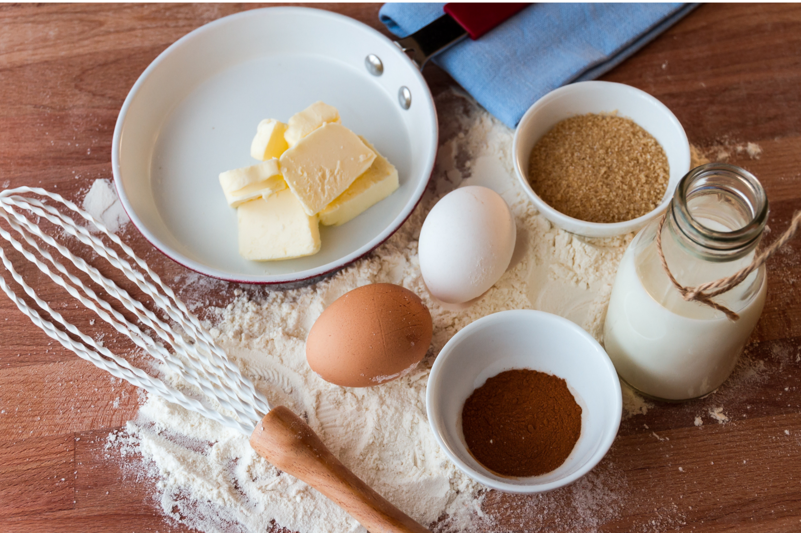

Respostería Jorgelin Michelis surgió en el año 2002 con la idea de crear una pastelería cuyos productos sean de muy alta calidad. En un comienzo comence haciendo tortas de cumpleaños para familiares tomandolo solo como una diversion, ya que me encanta cocinar...
... con el paso del tiempo, descubrí en mí, una pasión enorme por la respotería, generando una gran satisfaccion al recibir diferentes alagos de personas que consumian mis productos...
... hoy en día llevo 20 años dedicandome a la industria de la gastronomía, donde aprendí y crecí como cocinera experimentada, dedicandome de lleno a las tortas y pasteles de cumpleaños incluyendo el conocimiento en masas, merengues, salsas dulces, pasteles, cremas, gelatinas, galletas y bizcochos...
... como su nombre lo indica, son postres a un nivel básico, en el que no es necesario saber mucho de decoración, combinación de muchos sabores o el uso de ingredientes especiales. Por dicho motivo me puse a estudiar diferentes cursos, uno de ellos especializado en decoracion.
Utilizamos ingredientes de primera categoría para hacer nuestros postres, respondiendo a las expectativas del cliente.
La filosofía principal de nuestra empresa, es la garantía de que recibirás el producto esperado. Nuestros pasteles son hechos con un amor especial y una energía única, sabiendo que en su mayoria el significado de una torta es algo muy especial. La costumbre de reunirnos con amigos y familiares para celebrar nuestros cumpleaños tiene raíces en la antigüedad, las personas se reunían alrededor del cumpleañero para protegerlo de los malos espíritus que querían hacerle daño ese preciso día, ¡además lo bendecían y comían TORTA!
Mi expectativa a futuro es crear una confianza en cada persona que elige nuestro producto. La repostería es un oficio que se encarga de preparar y decorar dulces, tales como tortas, ponqués, galletas, cremas, salsas dulces, pasteles, budines y confites.
Nos dedicamos a la personalización de postres y tortas a gusto del consumirdor. Agregamos detalles particulares en base a lo que el cliente busca dependiendo de la ocasion.